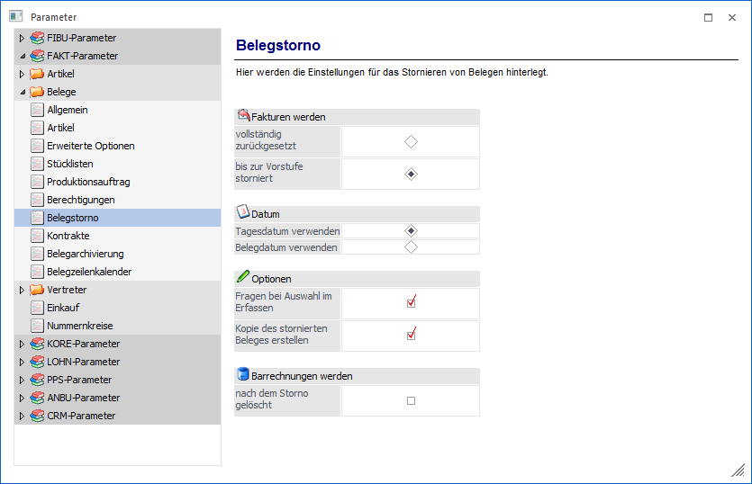
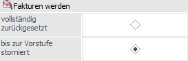
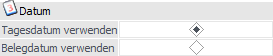
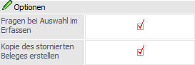
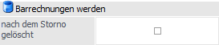

Über den Bereich "FAKT-Parameter - Belege - Belegstorno" können Einstellungen für das Stornieren von Belegen der WinLine FAKT hinterlegt werden.
Hinweis 1
Nähere Informationen bezüglich des Stornos von Belegen entnehmen Sie bitte dem WinLine FAKT2 - Handbuch Kapitel "Beleg stornieren".
Hinweis 2
Standardmäßig wird das Fenster in einem "Lesemodus" geöffnet, d.h. es können die bestehenden Einstellungen kontrolliert, Änderungen allerdings nicht durchgeführt werden. Hierfür muss zunächst mit Hilfe des Buttons "Bearbeiten" der "Bearbeitungsmodus" aktiviert werden. Alternativ kann diese Aktivierung auch über das Kontextmenü der rechten Maustaste (Funktion "Applikation xxx bearbeiten") erfolgen.

Fakturen werden

Ø Fakturen werden vollständig zurückgesetzt / bis zur Vorstufe storniert
An dieser Stelle wird definiert, welche Belege bei einem Storno einer Faktura storniert werden sollen.
ü vollständig zurückgesetzt
Es
werden alle Aktionen, die im Zusammenhang mit diesem Beleg durchgeführt wurden,
rückgängig gemacht. Der Beleg wird als nicht gerechnet / nicht gedruckter Beleg
gespeichert und kann wieder in der Stufe "Angebot" (oder jeder Nachfolgestufe)
bearbeitet werden.
ü bis zu Vorstufe storniert
Es
wird nur die zuletzt bearbeitete Belegstufe storniert und der Beleg kann in der
Vorstufe weiter bearbeitet werden (dies kann der Lieferschein oder der Auftrag
sein).
Hinweis
Sammelfakturen, welche auf Artikel kumuliert wurden, können nur mehr vollständig und nicht bis zur Vorstufe storniert werden!
Beispiel
Wird eine bereits gedruckte Rechnung mit der Option "bis zur Vorstufe stornieren" storniert, dann kann danach der Lieferschein nochmals bearbeitet werden.
Datum

Ø Tagesdatum verwenden / Belegdatum verwenden
Hier kann eingestellt werden, mit welchem Datum die Belege storniert werden sollen. Dabei kann zwischen den folgenden Optionen gewählt werden:
ü Tagesdatum verwenden
Als Datum
für alle Bewegungen, die im Zuge des Stornos durchgeführt werden, wird das
Tagesdatum verwendet.
ü Belegdatum verwenden
Mit dieser
Option werden alle Bewegungen mit dem ursprünglichen Belegdatum storniert.
Optionen

Ø Fragen bei Auswahl im Belegerfassen
Wird diese Checkbox aktiviert, so kann beim Storno im Belege erfassen und Telesales selbst ausgewählt werden, mit welchem Datum der Beleg storniert wird, bzw. kann auch entschieden werden, ob der gesamte Beleg oder ob nur bis zur Vorstufe storniert werden soll.
Ø Kopie des stornierten Beleges erstellen
Bei Aktivierung dieser Option, bleibt beim Storno eines Beleges der ursprüngliche Beleg als Kopie im System erhalten.
Barrechnungen werden

Ø (Barrechnungen werden) nach dem Storno gelöscht
Wenn diese Option " aktiviert wird, so werden beim Storno von Barrechnungen keine "nicht gerechneten/gedruckten" Belege mehr erzeugt.
Eine Ausnahme bildet hierbei die Funktion "Sofortstorno" im Kassendashboard, da diese beim Storno mit allen Artikelzeilen des Ursprungsbelegs automatisch wieder im Kassendashboard geöffnet wird.